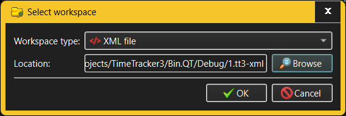

Destroy Workspace dialog
The Destroy Workspace dialog is invoked when the user wants to completely
destroy an already
existing workspace.

The fields in the Destroy Workspace dialog allow the user to specify:
- Workspace type - TimeTracker3 allows using a variety of
technologies to store workspaces, the simplest one of which is storing the
entire workspace in a single XML file in the local file system (this is the
choice ideal for individual users who need to track their working time).
Other workspace types will be available depending on the installed
TimeTracker3 configuration and may range from local (or remote) databases to
a full-fledged remote storage.
- Workspace location - a workspace is uniquely identified
by its "location", the exact nature of which varies with the workspace type.
For XML file workspaces this will be the full path to the XML file where the
workspace resides. Workspace locations are not directly editable;
instead, the Browse button will pop up the dialog where the
user can choose the location of an existing workspace in a manner
appropriate for the chosen workspace type.
When destroying a workspace, TimeTracker3 will use the current login
credentials (as previously entered via a Login dialog) to verify access rights -
within the destroyed workspace these login credentials must belong to an enabled
"administrator" Account, or the workspace destruction fails.
It is not possible to destroy a workspace that is currently in use. For
workspace types that offer shared access (such as workspaces residing in a
shared database or in a remote storage) the workspace in question must not be in
use by any TimeTracker3 instance running on any machine that can access that
workspace.
See also: -